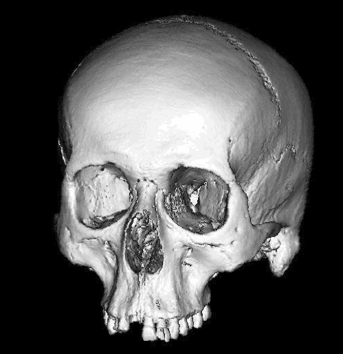
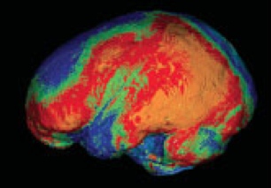
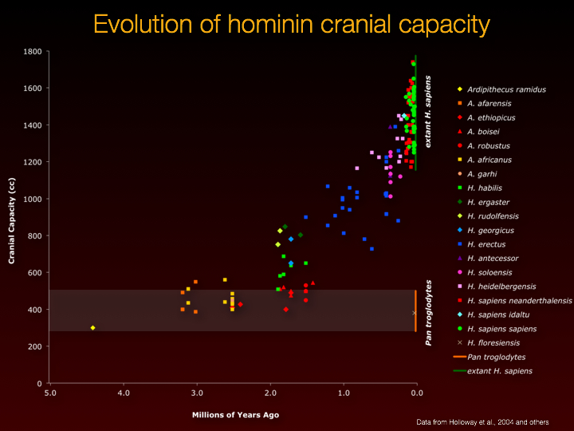
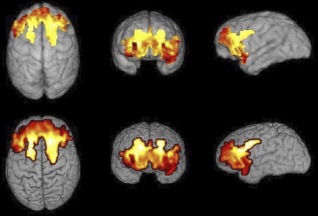
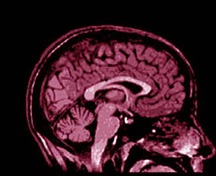

Human Brain Evolution Lab
Indiana University





The focus our research is the co-evolution of behavior, cognition, and brain - particularly in humans. However we also need to understand other species, to fully appreciate how humans have evolved differently.
NEWS
Scientific Sense Podcast interview (on Spotify)"Prof. Thomas Schoenemann of Indiana Univ. on evolution, Grammer in Apes language & Neaderthal brain" 23 July 2026; (Short teaser available on Youtube)
"New IU study reveals Neanderthal brains were more like ours than previously thought" • Indiana University College of Arts and Sciences News, 28 April 2026
"Neanderthals' brains weren't to blame for their demise, new study suggests" • LiveScience, 27 April 2026
"Neanderthal brains measure up to ours—literally" • Ars Technica, 28 April 2026
"Neanderthals were likely just as smart as us, so their extinction probably had nothing to do with intelligence" • IFLScience, 28 April 2026
"Brain Scans Reveal a Surprise About Neanderthal Intelligence" • ScienceAlert, 28 April 2026
"Forget the caveman myth: Neanderthal brains challenge what we thought we knew" • ScienceX, 28 April 2026
"A New Study Challenges One of the Biggest Assumptions About Neanderthal Brains" • ZME Science, 30 April 2026
"Neanderthals’ brains did not cause their extinction; new study points to surprising factors" • TOI The Times of India, 29 April 2026
"BRAIN BATTLE: Neanderthals WEREN’T stupid after all! Scientists reveal brainy lost cousins didn’t die off from lack of intelligence" • The U.S. Sun, 28 April 2026